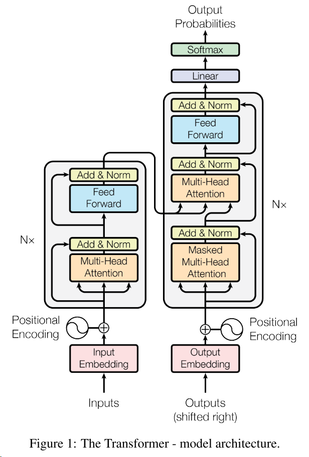
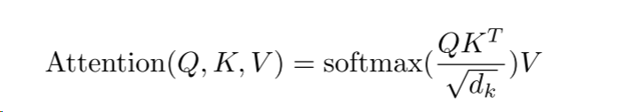
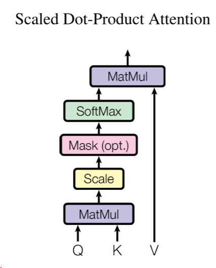
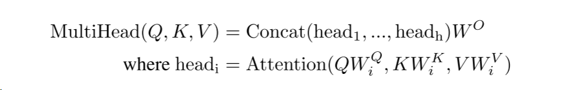
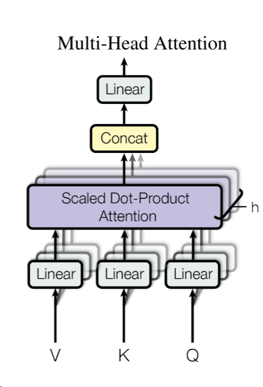
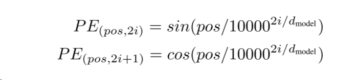
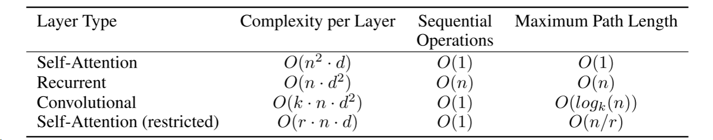
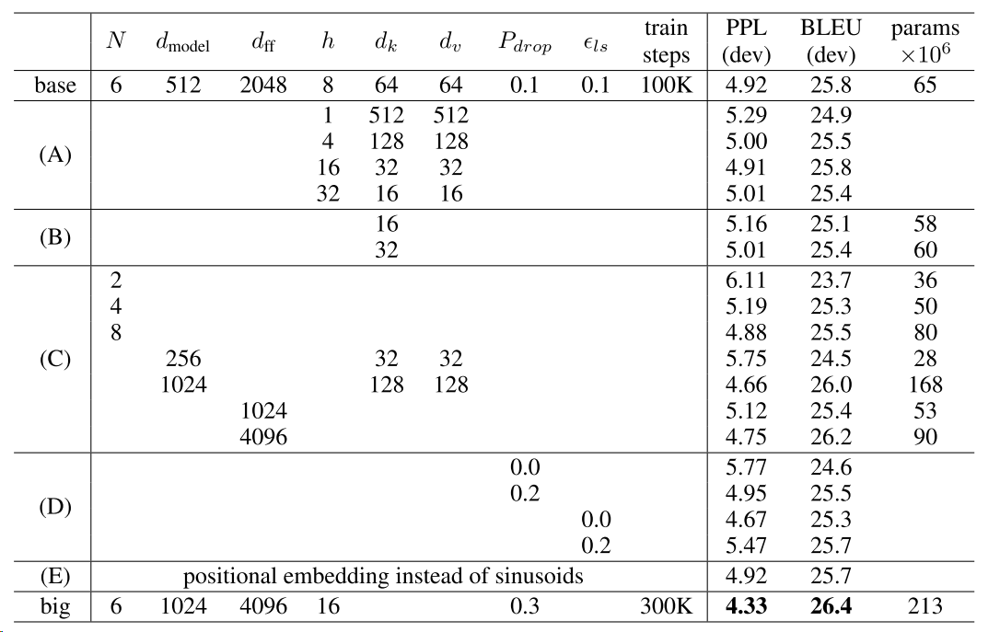

Attenion is all you need
0 摘要
主流的序列转导模型是基于循环或者卷积神经网络，基本上是一个编码器和解码器。表现比较好的就是使用了注意力来连接编码器和解码器。并且，我们提出了一个新的架构叫做transformer，它完全基于注意力机制，省去了卷积和循环。
1 介绍
循环神经网络已经被认为是序列模型转换问题的最佳解决办法，因此许多努力都在推动编码器-解码器的发展。
循环神经网络最大的限制就是没办法进行并行计算，这很吃内存和时间，尽管有些改进，但是还是没办法解决根本上的问题。
注意力机制已经成为一个整体在序列建模和转换当中，允许模型不考虑输入输出之间的距离。
在本次工作，作者提出了tranformer，一个没有循环的架构，完全依靠注意力机制得出全局依赖关系，并且有更大的并行化。
2 结论
在这项工作中，作者提出了tranformer的架构，完全基于注意力机制，表现很好。并且对未来的工作进行了展望，希望tranformer可以用到文本之外的其它方面，给出了代码实现。
3 相关工作
减少顺序计算的目标形成了一些网络，它们对所有输入输出并行计算隐藏表述，但是，将任意两个输入输出联系起来是线性或者对数增长，这使得学习远处的依赖关系比较困难。在transformer中，这被减少到一个恒定值。使用多头注意力机制来制造多个输出通道，匹配不同的模式。
自我注意力机制，计算序列中不同位置的相关性，自我注意力已经应用于各种任务。
端到端的记忆网络是基于循环注意力机制而不是序列对齐的循环，表现不错。
tranformer是第一个完全依靠自我注意力来计算输入输出的表示而不是用循环或者卷积网络。
4 模型结构
4.1 编码器和解码器堆栈
编码器是由6个相同的层，每个层又含有两个子层。这两个子层中第一个是自注意力机制，第二个是一个简单的全连接的前向反馈网络。在两个子层上也应用残差连接，紧接着还有对其的归一化操作。
解码器也是由6个相同的层组成的。除了每个编码器中的两个子层之外，还插入了第三个子层，第三个子层输出执行多头注意力机制，与编码器类似，都执行残差连接和层归一化操作。修改了解码器的自关注子层，防止当前位置去关注之后的位置。
4.2 注意力
首先计算key和value计算出相似度后，相当于得到一个权重矩阵，然后和v相乘，即结果output。
标准化的点注意，计算query和所有key相乘，最后再和value相乘，除以根号dk。
 多头注意力：使用不同的学习线性投影来将查询键值分别投影h次到dk、dk和dv是更有效的。
 全连接层作用于最后一个维度，是两个mlp。
embedding前需要把weight乘以根号512。
位置编码使用相对位置编码，而且使用的是一个和输入相同维数的向量。需要直接相加后再进行输入。
5 为什么需要自注意力机制
对于自注意力机制它的计算复杂度和卷积、循环都差不多，但是在并行计算和最大路径长度上有明显的优势。序列操作越小表示每次计算需要关注的序列点少，同时并行度会比较高，然后最大路径长度越小表示当前计算的值能被较远的值很好的影响到。
但同时，self-attention很多东西都没有假设到，都需要学，所以往往transformer的模型都比较大，需要训练的数据也比较多。
6 训练
训练数据有2014 英语到德语和英语到法语，8个p100训练了3.5天。
使用到了adam优化器，在训练当中还会根据公式改变学习率。在第一个warmup_steps=4000，训练步骤中线性增加学习率，然后按步骤数的平方根倒数成比例地降低学习率。
正则化，dropout=0.1应用于每个子层的输出，还应用于编码器和解码器加入位置信息之后的地方。
使用了标签平滑，使用了值为0.1的标签平滑，softmax的置信度只需要是0.1就可以了，但这会伤害困惑度。
7 结果
结果很好，不说了。
参数情况：
#问题
1 为什么用layernorm而不用batchnorm?
- LN：针对每个样本序列进行Norm，没有样本间的依赖。对一个序列的不同特征维度进行Norm
- CV使用BN是认为channel维度的信息对cv方面有重要意义，假如说输进去是四维的（B,C,W,H），首先不用考虑batchsize，bn是指对于单个C，对于其中的WH进行。如果对channel维度也归一化会造成不同通道信息一定的损失。而同理nlp领域认为句子长度不一致，并且各个batch的信息没什么关系，因此只考虑句子内信息的归一化，也就是LN。
- 为什么要除以根号dk？
首先计算相似度，不能因为向量的本来长度决定，是需要对其进行一定的归一化操作，比如除以dk。
那为什么要除以根号dk，是因为在数值比较小的情况下，无所谓。但是当dk比较大的时候，会导致最后进入softmax的值相对差距变大，最后出来大的值为接近于1，小的值接近于为0，这样会使得softmax认为即将要分类好了（因为分类好的结果就是对的结果是1，其余是0），导致梯度很低，更新慢。
- rnn和tranformer有什么区别？
rnn和transformer都是把序列信息传入mlp后，通过线性层来进行语义空间的转换。
不一样的是如何传递序列信息。rnn把序列信息按照时序信息传递给下一个要计算的输入，而tranformer是对全局的把握，一下子计算全局的信息。
- 为什么要在embedding中把权重乘以根号512
因为通常会做l2norm，这样会使得权重值归一化，维度越大的向量归一化后单个值就越小。为了和position encoding有比较好的匹配，所以乘以一个值平衡一下，让它们在同一个scale上面。